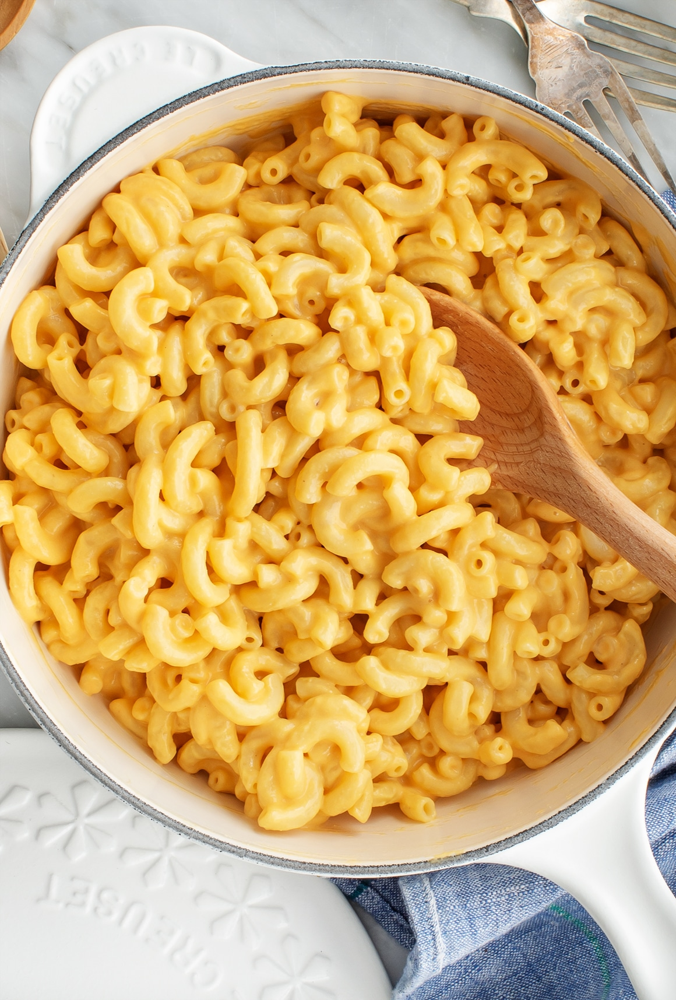

Macaroni and Cheese
Ingredients
- 2 cups of elbow macaroni
- 1/2 cup of sharp cheddar
- 6 cups of water
- 2 - 4 tbsp of margarine or butter
- 1/4 cup of milk
Instructions
- Boil the water in a saucepan.
- Stir in the macaroni and cook for 7 to 8 minutes, or until tender.
- Drain the water and return the macaroni to the pan.
- Add in the margarine or butter, milk, and cheese.
- Stir and enjoy!